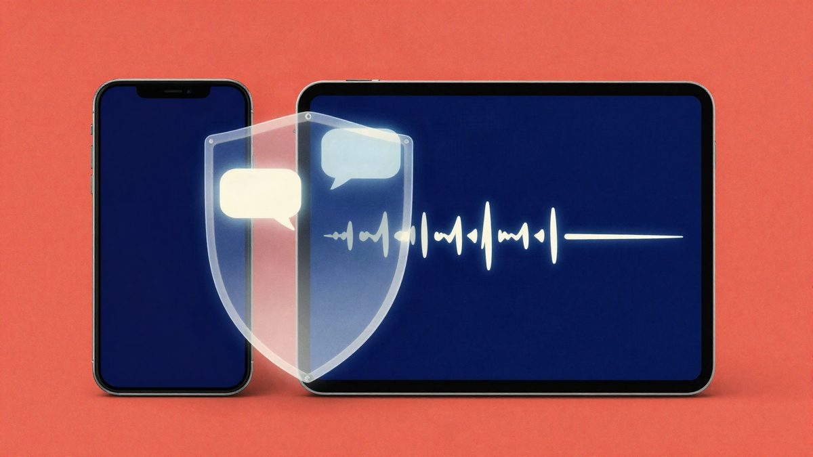

NordVPN je dodao zaštitu od spam SMS-ova i prijevara na iPhoneu

NordVPN je za iPhone i iPad dodao zaštitu od neželjenih SMS-ova te besplatnu aplikaciju HangUp za filtriranje poziva. SMS alat radi unutar glavne aplikacije, a HangUp prepoznaje sumnjive i neželjene pozive te ih može blokirati. Obje opcije su već bile dostupne na Androidu.
NordVPN je za iOS predstavio novu zaštitu od neželjenih SMS-ova i aplikaciju HangUp za zaštitu poziva. Zaštita od SMS-ova radi unutar glavne NordVPN aplikacije, dok je HangUp zasebna i besplatna aplikacija za iOS. Obje opcije su od 26. listopada 2026. dostupne i na iPhoneu, nakon što su ranije stigle na Android početkom godine.
Zaštita od SMS-ova provjerava poruke od nepoznatih pošiljatelja. Uspoređuje broj s podacima o reputaciji, analizira URL-ove i koristi informacije o sadržaju poruke. Kad otkrije sumnjivu poruku, korisniku šalje push obavijest s vrstom prijetnje i preporučenim korakom.
Otvorene sumnjive poruke prikazuju se u sigurnom prikazu. Time se smanjuje rizik od slučajnog klika na link. U aplikaciji postoji i dashboard s pregledom otkrivenih poruka i učestalosti detekcije. Postavljanje je moguće tijekom instalacije ili kasnije kroz opciju Product hub. Nakon toga alat radi u pozadini, neovisno o tome je li VPN uključen.
HangUp je fokusiran na telefonske pozive. Aplikacija u stvarnom vremenu skenira dolazne pozive i prikazuje tko zove. Pozive može označiti kao „scam”, telemarketing, anketu, naplatu potraživanja ili prijevaru. Korisnik zatim može automatski blokirati odabrane kategorije. U zapisniku poziva ostaju zabilježeni blokirani pozivi i razlog blokiranja.
HangUp ne traži plaćenu NordVPN pretplatu. Dovoljno je imati besplatan Nord račun.
Izvor: Impress Watch